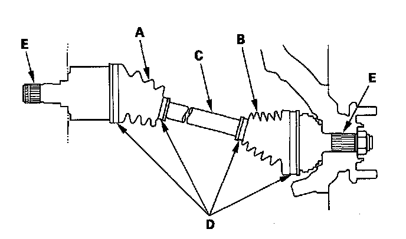

Axle Shaft Assembly: Testing and Inspection
Driveshaft Inspection1. Check the inboard boot (A) and the outboard boot (B) on the driveshaft (C) for cracks, damage, leaking grease, and loose boot bands (D). If any damage is found, replace the boot and boot bands.

2. Turn the driveshaft by hand, and make sure the splines (E) and joint are not excessively loose.
3. Make sure the driveshaft is not twisted, bent, or cracked; if it is, replace it.